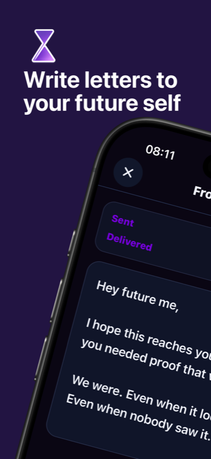
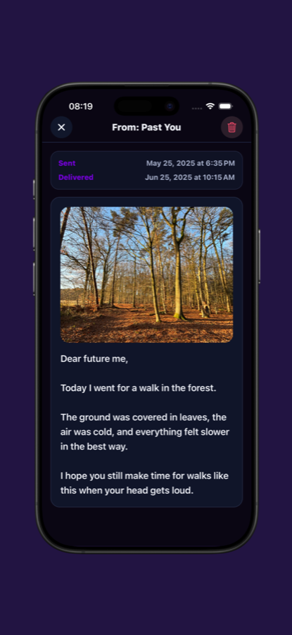

01
Write what is true right now.
A promise. A difficult week. A tiny win you do not want to forget. Write freely, without turning it into a performance.
- Text letters for any moment
- Add a photo to preserve the context
- Record your voice when words are not enough

